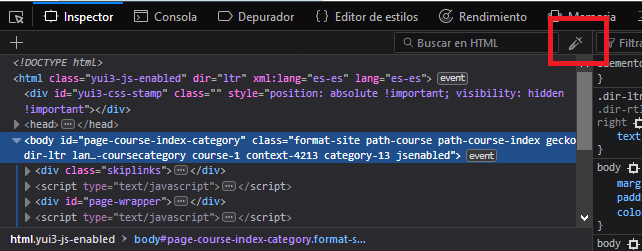
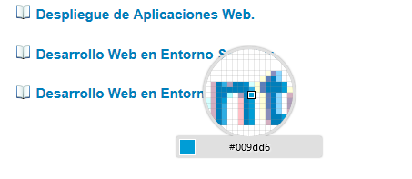
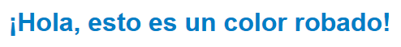

Una de las opciones que nos ofrece las herramientas de desarrollo de firefox es poder obtener el valor exadecimal de un color que se encuentre en cualquier página.
Para ello debemos abrir las herramientas de desarrollador y hacer click en el icono del cuentagotas ubicado en la esquina superior derecha de la estructura html:

Una vez abierto, nuestro cursor se transformará en una lupa para poder seleccionar el píxel exacto, además de una previsualización del color junto a su valor hexadecimal.

Al hacer click, el código exadecimal se habrá copiado al portapapeles y podremos usarlo para nuestra propia página web.